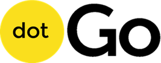

Anuncio de la dotGo 2014
Basado en la filosofía de Python y una sintaxis derivada de C, el lenguaje Go ya conocido por muchos, es una herramienta que se tercia bastante útil en este mundo de escala cada vez mayor. Siendo lo que más destacan sus adeptos su facilidad en la implementación de concurrencia y su portabilidad, cada vez más se va acercando al paisaje de lenguajes mayoritarios. Tanto es así que la gente de dotConferences ha decidido este año organizar una de sus conferencias sobre Go... y, como son así de majos, os pasamos un descuento del 20%. @dotConferences, gracias!
Sobre dotConferences
dotConferences, creado por Sylvian Zimmer, consiste en una serie de eventos tecnológicos que tienen lugar en París. Con el objetivo de proporcionar charlas técnicas con la calidad de las charlas TED, en las que los asistentes puedan concentrarse en éstas, dejando de lado los portátiles, mientras disfrutan de los escenarios de algunos teatros de París. Todas las charlas son grabadas en vídeo, con bastante calidad y desde diferentes ángulos, y los ponentes suelen combinar preparación y relevancia, de modo que el resultado sea de alta calidad.
Sus conferencias tratan sobre algunos temas diversos, pero tienen pensado crear más. Actualmente, celebran:
Los ponentes
Como ya se ha comentado antes, los ponentes son personajes relevantes en el mundo de Go:
- John Graham-Cumming: Programador en CloudFlare y autor de The Geek Atlas.
- Brad Fritzpatrick: Creador de memcached, OpenID y LiveJournal y miembro del Go Team.
- Jeremy Saenz: Creador de Martini.
- Andrew Gerrand: Miembro del Go Team.
- Tomás Senart: Creador de Vegeta y antiguo ingeniero de software de SoundCloud.
- Francesc Campoy FLores: Miembro del Go Team.
- Keith Rarick: Creador de godep, Beanstalkd y Doozer y antiguo programador en Heroku.
- Felix Geisendörfer: Creador de GoDrone y NodeCopter.
- Blake Mizerany: Creador de Sinatra, y co-creador de Doozer.
- Dave Cheney: Blogger, autor de software abierto y contribuidor al proyecto Go.
Disfrutad!
- CUPÓN 20% dotGO
- ENTREDEVYOPS